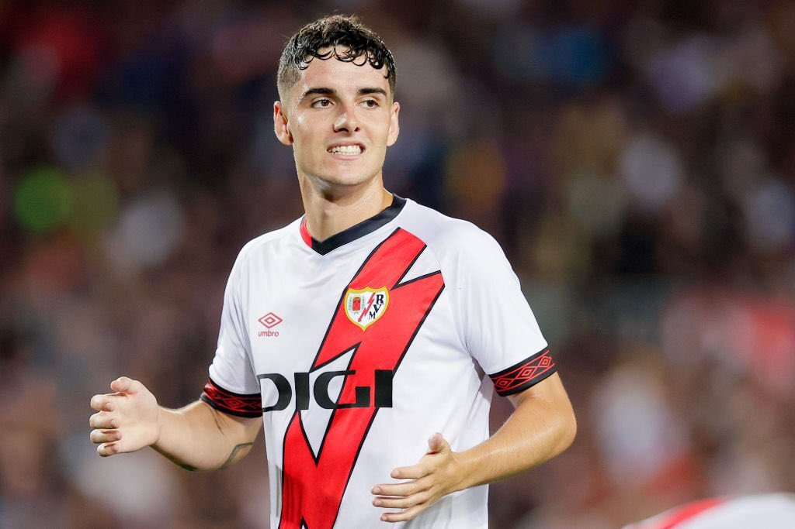

O espanhol foi zagueiro durante sua carreira de jogador, sendo a lateral direita titular do Athletic Club entre 2003 e 2015. Iraola fez mais de 500 jogos pelo time de Bilbao, ajudando-o a chegar à final da Copa del Rey duas vezes, além da final da Liga Europa da UEFA em 2012. Ele passou uma única temporada no New York City, da Major League Soccer, antes de se aposentar em 2016. A primeira nomeação de Iraola como treinador sênior ocorreu dois anos depois, no time cipriota AEK Larnaca, antes de retornar à Espanha para uma temporada no clube promovido Mirandes. Ele construiu uma reputação para o clube como matador de gigantes, eliminando o Villarreal e o Sevilla da Copa del Rey a caminho das semifinais. Em agosto de 2020, Iraola assumiu o comando do Rayo Vallecano, que ele guiou de volta à LaLiga em sua primeira temporada, e os levou a vitórias sobre Real Madrid, Barcelona e Sevilla na primeira divisão, voltando ao Rayo após duas temporadas na Premier League, Andoni assume a missão de levar o Rayo a glorias nunca alcançadas.
O jovem jogador chegou cheio de expectativas e finalmente vem demosntrando o porque do valor investido, chegando na metade da temporada com +10 participações em gols, assumindo a responsabilidade e possivlmente se tornando um idolo.
 Página oficial do clube.